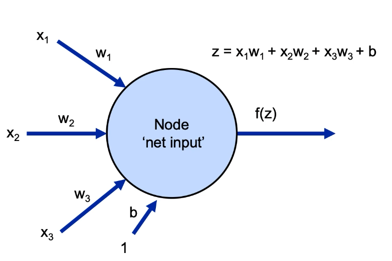
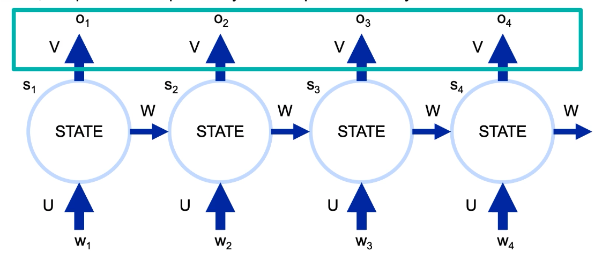
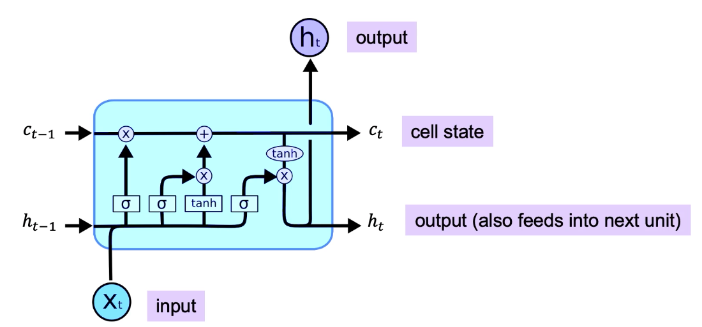
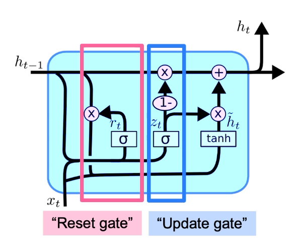
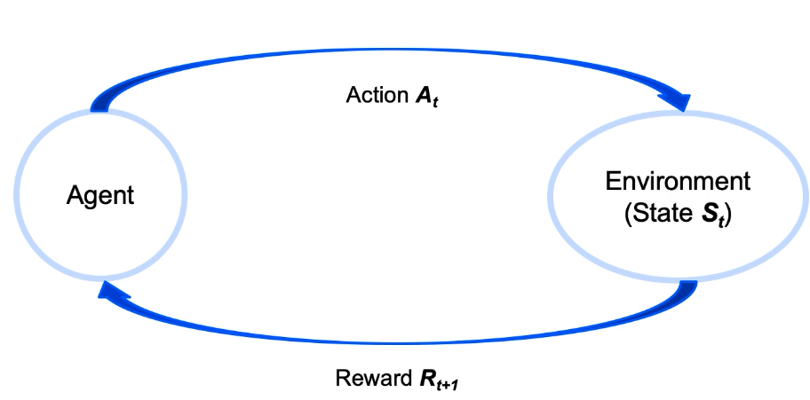

Deep Learning
Neural Networks
- consists of many cells in each layers; the complete structure can have many layers;
-
each cell is a computational unit that combines the inputs from previous layer.
- The inputs are fed from each cell in the previous layer.
- inputs weights are combines in the cell but are weighted. The net input is denoted as z .
- The summed value is operated through some function and is passed on to next layer. The function is called activation function , and the output is a .
- The cells in the next layer uses this as their inputs and the same things keeps propagating.
- The model is going to learn the wights.
- For each cell, there is an additional bias input b
- most common activation function is the sigmoid function, f = 1/(1+e^-z) . This is also easier to use because the derivative of the function is easy to compute, which comes out to be f(1-f) .
-
a sigle cell with all its inputs, outputs, weights, activation function is called
perceptron
.
 - a single neuron only allows for linear decision bounday; real world problem decision boundaries are often times complex. so we need more and many neurons and layers
-
Using sklearn to create multi layer perceptron:
from sklearn.neural_network import MLPClassifier # (5,2,5) indicates 3 hidden layers with 5, 2 and 5 neurons respectively. # default activation is 'relu' my_net = MLPClassifier(hidden_layer_sizes=(5,2,5), activation='logistic') my_net.fit(X_train, y_train) my_net.predict(X_test)
- Gradient descent is used for updating/learning the weight values. This updates the wight values by a learning factor multiplied by the average of all the errors of prediction.
- Stocahstic gradient descent uses single value to compute the correction factor and update the wight; but has a chance of being impacted by noise.
- Mini-batch gradient descent uses a certain subset of data to compute the correction factor, and thus it brings best of both worlds. (computationally efficient than gradient descent, and not so much prone to noise as Stocahstic gradient descent.)
- These are all feed-forward networks.
Back Propagation
- Feed-forward networks are not efficient in learning weights.
- Back propagation uses a loss function J to update weights, that makes the updating the weights very efficient.
- Here we adjust each weight differently based on the loss function, by using a partial derivative of the loss function with that particular weight value.
- Gradient to update the weights are computed from the final layer; and the numerical computation is used to replace the partial derivate term. This means the partial derivate of J w.r.t W of final layer is numerically computed as (y_actual - y_pred)*(input into the final layer) .
- Similarly for the earlier layer, a rather complex term is created, and other earlier layers are built on top of this.
- Based on the gradient computed, the weight is updated finally using a learning rate.
- Vanishing Gradient: The max value of the derivative of the sigmoid function is 0.25. if the network layer gets deeper and the more and more terms are being multiplied, the product gets smaller and smaller at the earlier layers. This is called Vanishing gradient . Thus other activation functions like Relu etc are more common.
Activation Functions
- Step Function : output is 0 for values < 0 and 1 for values greater than 0. Also allows non-linear decision.
- Sigmoid Function : talked many times, allows non-linear decision. Keeps the values > 0.0 and < 1.0.
- Hyperbolic Tan : gives a more range, values are -1 to +1. maybe faster and values are between -1 and +1. Could have a possibility of vanishing gradient.
- Relu : for any values less than x, return 0. Return z for any value equal to or grater than z. More efficient than sigmoid and hyperbolic functions since it zeros out the values. But since zeroing out of nodes losses information, we want to ensure some learning on those nodes. Thus, leaky relu. No vanishing gradient.
- LeakyRelu : In leaky relu, for input greater or equal than z, the values are still z, but for smaller values, the output is alpha*z, where alpha is some small number. So the output is max(alpha*z,z)
Regularization in Deep Learning
- to prevent overfitting; techniques that prevent generalization error (not necessarily its training error).
-
Different techniques available in deep learning are:
- Add regularization penalty in cost function; Add a term for subtraction in the loss function J.
- Dropout: Randomly loose some neurons in the model so that model is not reliant on particular neuron.
- Early stopping: so that the model is not perfectly fit to the training data. For eg: check the validation loss every 10 epochs, and if the loss is higher than last time, use the previous model, i.e. from 10 epochs previous.
Optimizers
- There are many variations in the steps of updating weights.
-
Momentum
- the idea is to smooth the variation, by incorporating past values by taking a running average.
- its a hyperparameter; generally < 1
- often referred by beta or epsilon, and beta is usually chosen as 1-learning rate.
- as momentum is gained, the steps of update is going to be more smoother and larger
- momentum can overshoot the values also; but overshooting will cause it to shrink and will eventually go to optimum value
-
Nestrov Momentum
:
- The idea is to control overshooting by looking ahead.
- In this concept, the gradient is applied only to the non-momentum component.
-
AdaGrad
:
- Adaptive gradient algorithm
- scale the update for each weight separately
- this idea is to update the frequently update weight less.
- keeps the running sum of previous updates; and divide the new update by factor of previous sum
-
RMSProp
:
- rather than using sum of previous gradients, decay older gradients more than recent ones
- quite similar to Adagrad
-
Adam
:
- Adaptive Optimization Algorithm
- uses first and second order change information and decay both over time.
- THus it uses beta-1 and beta-2. The default values can be used as beta-1 = 0.9 and beta-2 = 0.99, and can be let at these values; most of the times, need not to be played around too much.
- combines both the idea of RMSProp and Momentum
- Adam and RMSProp are quite popular.
- Gradient descent classical approach to update weight is to do following Wnew = Wold - (learning_rate * derivative)
- Stochastic Gradient descent take derivate from just one point; but the data steps are small
- Mini-batch gradient descent takes a batch for the derivative.Bests of both above points
- Epoch: refers to the single pass through all of the training data. For full-batch gradient descent, one iteration is one epoch. In SGD or online learning, there would be n-steps taken per epoch where n is the training set size. In minibatch, there will be n/batch-size steps taken per epoch
- It is recommended to shuffle data after each epoch; so that batches are not the same every time and arrival of data is different.
Keras and Example
- Keras is high level library that run either on Tensorflow or Theano
-
Provides two approaches to building the structure of model:
- Sequential Model : linear stack of layers, simple and more convenient
- Functional API : More detailed and complex; but allows more complicate architectures
Sequential Model Example:
from keras.models import Sequential model = Sequential()
Then add layers to the model one by one as follows: You may want to pass the data through StandardScalar() before passing through NN .from keras.layers import Dense, Activation #first hidden layer with 4 neurons #.. input_dim is only need at the first hidden layer model.add(Dense(units=4, input_dim=3)) model.add(Activation('sigmoid')) #next hidden layer model.add(Dense(units=1)) model.add(Activation('sigmoid')) #or both lines can be combined as follows model.add(Dense(1,activation='sigmoid')) #print model summary here to see the number of parameters model.summary() #compile the model as #defining the learning rate, loss function and metrics #use categorical_crossentropy for categorical output model.compile(SGD(lr=0.003),'binary_crossentropy',metrics=['accuracy']) #fit the data, and save the history for analysis history = model.fit(x_train, y_train, validation_data=(x_test, y_test), epochs=500) #-------------------- #two kinds of predictions are done #.. the class predictions y_pred_classes = model.predict_classes(x_test) #.. the probability predictions y_pred_prob = model.predict(x_test)
You can draw a ROC curve using following:roc_curve(y_test, y_pred_classes)
-
Multi Class Classification with NN
- Using sigmoid, output are only 0 and 1.
- Idea is to use one-hot encoding. (create N- new columns with 1 on the rows for column head)
- In NN, let the final layer be a vector with length equal to the number of possible classes.
- Extend sigmoid to softmax() function. Softmax gives out a vector whose entries are between 0 and 1, the sum of which is 1.
Use Categorical cross entropy as loss function.
- Going to the formula used to update the weights, it relies on input values at the first layer
- So, if we do not normalize, the higher values update more quickly and the lower values do not.
- This creates an imbalance; and slows down the speed at which the model converges.
Convolutional Neural Networks
-
special features of image data:
- topology of pixels
- invariant to translation; invariant to size. A small cat is still a cat
- lighting and contrast as factors
- closer pixels tend to have similar values
- important of edges and shapes in image
- fully connected network for image requires a vast number of parameters. For such network, variance will be too high. so a bias is introduced by structuring the network to look for certain kinds of patterns.
- certain intermediate layers can learn different features; for example using kernel for edge detection.
- the kernel or filter is performed on all three color matrices; but often times the edges and corners are neglected. Thus padding is introduced.
- kernel does not need to be square; its better to use an odd size, but not necessary.
- since the pixels at the edge never get to become center pixel, we pad image with 0. This is called padding .
- Stride is the step size as the kernel moves across the image. Min = 1; Stride > 1 scales down the output dimension.
- Depth: no of input channels. FOr example, RGB image has depth of 3. Output from the layer will also have a depth
- If there are 10 kernels in a layer, the output of that layer will have a depth = 10
- Pooling : will reduce the size of image by mapping a patch of pixels to a single value. It does not have parameters, but there are different pooling types, for ex: Max pooling, average pooling. It does not move like Kernel though, as there is no overlap in the pooling operations.
Creating a CNN Using Keras
#import libraries from keras.preprocessing.image import ImageDataGenerator from keras.models import Sequential from keras.layers import Dense, Dropout, Activation, Flatten from keras.layers import Conv2D, MaxPooling2D #image data usually are 3 dims, x-dim, y-dim and 3-channels # .. so training data is going to be 4-dims including the no of samples
Here we also need to mend the y-values so that it fits the NN. We will convert the values to a vector using one-hot encoding.
y_train = keras.utils.to_categorical(y_train, num_classes) y_test = keras.utils.to_categorical(y_test, num_classes)
Let us create the mode.#create a model model = Sequential() #.. add a Convolutional layer model.add(Conv2D(32, (5,5), strides=(2,2), padding='same'),input_shape=x_train.shape[1:]) model.add(Activation('relu')) # add another convolution layer model.add(Conv2D(32, (5,5), strides=(2,2))) model.add(Activation('relu')) # add a max pool layer, add dropout for some regularization model.add(MaxPooling2D(pool_size=(2,2))) model.add(Dropout(0.25)) # flatten to 1D data model.add(Flatten()) # add 1 more dense layer model.add(Dense(512)) model.add(Activation('relu')) model.add(Dropout(0.5)) # add another dense layer model.add(Dense(num_classes)) model.add(Activation('softmax')) model.summary()
Now that the model definition is complete, let us define optimizer and compile and fit the model.
batch_size = 32 my_optimizer = keras.optimizers.RMSprop(lr=0.0005, decay=1e-6) model.compile(loss='categorical_crossentropy', optimizer=opt, metrics=['accuracy']) model.fit(x_train, y_train, batch_size=batch_size, epochs=15, validation_data=(x_test, y_test), shuffle=True)
After the model is trained, we can call predict as follows:model.predict_classes(x_test)
The accuracy of the model can be determined as follows:from sklearn.metrics import accuracy_score accuracy_score(np.argmax(y_test, axis=1), model.predict_classes(x_test))
Since we had one-hot encoded the y_test, value we used the np.argmax to convert the data back. We can add more convulation layers with different depth to increase model accuracy.We can also freeze training on a layer by setting trainable parameter to false for the layer.
Transfer Learning
- earlier layers are more expensive to train, due to vanishing gradient
- earlier features/layers are very basic characterisitic or generic anyway
- later layers have more immediate impact on the results, and are more specific
- early layers should generalize, and can be reused. Later layers can be added based on problem need, and trained
- This is transfer learning.
-
its more art than science in that there is no specific rule on how may layers to remove or how many new layers to add etc. Following are some of the guiding principles:
- similar data nad problem requires less fine tuning. For eg. CNN to identify "dogs" can easily be adapted to identify "Cats"
- more data available is better for better fine tuning
- different problem sets, fine tuning may contribute less
- Fine Tuning: Additional training of a pre-trained network on a specific new dataset.
Many Famous CNNs
-
LeNet
:
- Built for MNIST, Yann LeCunn using grayscale image
- First convolution used
- kernel used is 5x5 and a depth of 6 at first layer. So total no of weights in this layer is 6x((5x5)+1bias) = 156 weights
- some kind of pooling layer
- another 5x5 filter with stride of 1 and depth of 16. Here the no of weights is (6* (5x5) ) + 1 bias = 151 and times 16 = 2416 weights. The value 6 is because of 6 inputs from earlier layer and 16 because of the depth in this layer.
- This is flattened and then there are fully connected layers.
- Total of 61706 weights.
- Convolutional layers have less weights than fully connected layers.
-
AlexNet
:
- considered the flash point of modern Deep Learning.
- created in 2012, for imagenet for 1000 classes and 1.2 million images.
- model was broken down into two parallel paths.
- had weeks of training time.
- data augmentation was performed like cropping, flipping and other manipulations to help with overfitting.
- convolutions were used with ReLU, the first to use ReLU
-
VGG
:
- simple network
- avoid manual choice of convolution size, but use only 3x3 kernel size, but use deep ore more convolution layers.
- this is because two 3x3 stride convolutions in a row is equivalent to one 5x5; whereas three 3x3 convolutions is equivalent to one 7x7 convolution
- idea is that more is better , larger model has lesser no of weights.
- can be considered a simplified, deeper LeNet.
-
Inception
:
- turn each layers into branches of convolutions; of different depths
- each branch handles smaller portion of workload
- concatenate different branches at the end
-
ResNet
:
- Issue is that as the NN got deeper and deeper, the performance got worse and worse even on training set
- Earlier layers are slow to adjust, vanishing gradient.
- Then came ResNet as a solution.
- The basic idea is that best transformation over multiple layers is close to F(x) + x where x is the input and F(x) is the usual ouput of a layer with activation. Now instead of F(x) we add x and pass it through ReLU one again.
- the idea to do this is to keep passing the info from earlier layers to the output of current layer
- avoids vanishing gradient
Recurrent NN
-
w
is the state at that time or sequence in the event chain, for example a word in text or transaction,
U
is the linear transformation,
S
is the state, which is also fed as input to next step. All these three things are combined and passed through an activation to give
W
.This
W
is fed into another state. The combined value
W
is done another linear transformation
V and passed through another activation for output o . -
Following shows unrolled RNN.
 - Mathematically, s_i = f(U*w_i + W*s_i-1), i.e. current state = func1(old state, current input)
- o_i = softmax(V*s_i), i.e. current output = func2(current state)
-
some mathematical notation:
- r = dimension of input vector at each state;
- s = dimension of hidden state;
- t = dimension of output vector;
- Thus, U is sxr matrix
- W is sxs matrix
- V is txs matrix
- The weight matrics U, V and W are same across all positions
- slight variation of back propagation called Backpropagation Through Time .
- RNN is prone to vanishing gradient or exploding gradient since the sequence can be too long. To handle this, we set the maximum length of our sequences. Padding or truncating is done to match the length of sequence.
-
RNN is used for following purposes:
- Forecasting sales, loss rates, traffic etc
- Speech Recoginition
- manufacturing sensor data.
- genome sequencing
- cons: because of large sequence, it makes it hard to keep information from distant past in current memory.
-
from keras.models import Sequential from keras.layers import Dense, Embedding from keras.layers import SimpleRNN #pad data so that the size fits x_train = sequence.pad_sequences(x_train, maxlen=maxlen) x_test = sequence.pad_sequences(x_test, maxlen=maxlen) #create a model model = Sequential() #use embedding since we are using word data max_features = 20000 word_embedding_dim = 50 model.add(Embedding(max_features, word_embedding_dim)) #add RNN # 5 is the hidden dimension model.add(SimpleRNN(5, kernel_initializer=initializers.RandomNormal(stddev=0.001), recurrent_initializer=initializers.Identity(gain=1.0), activation='relu', input_shape=x_train.shape[1:])) # add one dense layer model.add(Dense(1, activation='sigmoid')) # add optimizer rmsprop = keras.optimizers.RMSprop(lr = .0001) #compile the output model.compile(loss='binary_crossentropy', optimizer=rmsprop, metrics=['accuracy']) #fit data mode.fit(x_train, y_train, batch_size=batch_size, #=32 epochs=10, validation_data=(x_test, y_test)) #evaluate score,acc = model.evaluate(x_test, y_test, batch_size=batch_size)
LSTM
- a complex kind of RNN; to solve the long term memory issue of RNN (c. 1997)
- standard RNNs have poor memory
- LSTM defines a more complicated update mechanism for changing the internal state
- LSTM remembers the information from the last step
- LSTM adds an explicit memory unit; and augments RNNs with few additional Gate Units. These Gates control how long or if the events will stay in memory.
- Input Gate: causes items to be stored in memory.
- Forget Gate: causes items to be removed from memory.
- Output Gate: causes hidden unit to feed forward (output) in the network
-
single unit of unroll LSTM is as follows:

GRU: Gated Recurrent Unit
- has Reset Gate and Update Gate , what to forget and what to keep
- 
- GRUs perform similarly as LSTM, but with shorter training time, esp for small datasets
Seq2Seq
- convert seq from one domain to another domain, for ex from spanish to french
- hidden state will have accumulated information from all previous state.
- works in encoder and decoder fashion for machine translation.
- Greedy Search: produce words one by one
- Beam Search: produce multiple different hypotheses to produce words until EOS, and see which full sentence is most likely
- Attention: the final hidden state of encoder is used as initial state of decoder. Thus each decoder time step depends on same encoder embedding. Attention allows to look at words that matter. It looks into how close the veector in encoder is closest to the decoder state where we are at; and assigns weight simlarly.
Uses:
- FOrecasting, Speech Recoginition, Machine Translation, Image Captioning, QA, Anamoly detection, Robotic control
Autoencoders
- Deep Learning model used for unsupervised learning.
- Applications in: Dimensionality Reduction, Preprocessing for classification, identifying essential elements of input data and filtering out noise
- PCA only captures linear combination or relationships; but in reality there could be non-linear relationship and best lower dimensional representation could be something else; especially for images.
- There is encoding step , which is a dense network, that generates some kind of embeddings . The embedding is the lower dimensional representation. This embedding can be fed into a decoder network to reconstruct the original data (image).
- Some applications may use deep Autoencoders, but most of the times single layer encoding and decoding steps are used.
- Based on the error in the final reconstructed image, loss function is used to update weight of the networks. Uses the same feed-forward and back-propagation steps
- Similarly of images can be computed by passing images through the encoder network and by computing similarity score using the latent vectors.
- Decoders can be used to decompress the data.
- Decoders can also used for generative model.
-
Business Applications:
- Dim Redcsn
- Information retrieval, compression and decompression
- anomaly detection
- machine translation
- image related applications like denoising, generation, processing, compression
- Drug Discovery
- Popularity of social media post prediction
- sound and music synthesis
- sparse Autoencoders used in recommender systems
Variational Autoencoders
- also generate latent representation and can be used to generate samples, new samples
- it generates parameters, rather than fixed values.
- uses the (normal) distribution to learn parameters and using those parametes, new samples are generated
-
the loss function has two components:
- 1. pixel wise difference between the original imagen and reconstructed image. (eg MSE)
- 2. difference between the vectors produced by the encoder and the parameters of the standard normal distribution.
- For the second component, KL divergence is computed between the generated data and the normal distribution. Thus KL Loss measures the difference between the two distributions.
- This second component penalizes the log(sigma) and mean respectively for being different from zero.
- KL divergence is not technically necessary to include in the VAE loss function; but it helps to generate the latency space; Similar images are close in the latent space.
- to compute the MSE for PCA, similar to .transform(), you can also compute .inverse_transform() to reconstruct the original data.
- The reconstruction error of variational autoencoders can be higher because variational autoencoders are designed to maximize the interpretability of the latent space, not to minimize the reconstruction error
Auto Encoder Code
-
Following code shows the use of
autoencoder
using functional API:
from keras.layers import Input, Dense from keras.models import Model #we want to compress it to 64 dimensions with 256 hidden dimension ENCODING_DIM = 64 HIDDEN_DIM = 256 #defining ENCODER with input layer for MNIST dataset (28x28 = 764) inputs = Input(shape=(784,)) encoded_hidden = Dense(HIDDEN_DIM, activation="relu")(inputs) encoded = Dense(ENCODING_DIM,activation='sigmoid')(encoded_hidden) encoder_model = Model(inputs, encoded, name='encoder') #defining DECODER encoded_inputs = Input(shape=(ENCODING_DIM,), name='encoding') decoded_hidden = Dense(HIDDEN_DIM, activation="relu")(encoded_inputs) reconstruction = Dense(784, activation="sigmoid")(decoded_hiddens) decoder_model = Model(encoded_inputs, reconstruction, name='decoder') #combine the two outputs = decoder_model(encoder_model(inputs)) atuo_Encoder = Model(inputs=inputs, outputs=outputs) atuo_Encoder.compile(optimizer='rmsprop', loss='binary_crossentropy', metrics=['accuracy']) #same input output atuo_Encoder.fit(x_train,x_train,shuffle=True,epochs=5,batch_size=32)
To see only the encoder outputencoded_images = encoder_model.predict(x_test)
To encode and decode at the same time: You can compute the MSE comparing the output with the x_testdecoded_images = atuo_Encoder.predict(x_test)
-
Code for
Variational Autoencoders
: First encoder model
inputs = Input(shape=(784, ), name='encoder_input') x = Dense(hidden_dim, activation='relu')(inputs) z_mean = Dense(latent_dim, name='z_mean')(x) z_log_var = Dense(latent_dim, name='z_log_var')(x) #sampling is a function that we define z = Lambda(sampling, name='z')([z_mean, z_log_var]) encoder_model = Model(inputs, [z_mean, z_log_var, z], name='encoder')
Then Decoder model:latent_inputs = Input(shape=(latent_dim,),) x = Dense(hidden_dim, activation='relu')(latent_inputs) outputs = Dense(784, activation='sigmoid')(x) decoder_model = Model(latent_inputs, outputs, name='decoder')
Create complete model:outputs = decoder_model(encoder_model(inputs)[2]) vae_model = Model(inputs, outputs, name='vae_mlp')
Now add loss function. We need to define our own. For this we need three components that can be defined using the two terms, reconstruction loss, kl loss. Let us name the sum as total_vae_lossvae_model.add_loss(total_vae_loss) vae_model.compile(optimizer='rmsprop', metrics=['accuracy']) vae_model.fit(x_train, epochs=50,batch_size=128)
Generative Adversarial Networks (GAN)s
- The development of GANs is motivated by the vulnerability of standard Deep Learning approach to input manipulation
- More sensitive to hyperparameters than common NN.
-
Its a way to train two NN simultaneously; The two NN are:
- Generator: that learns to map random noise to images indistinguishable from those in training set.
- Discriminator: Try to identify if the input is real or fake.
-
Steps:
- Randomly inititalize the weights of generator and discriminator NNs
- Randomly initialize the noise vector and genrate image using generator.
- Discriminator NN: Predict the probability of generated image to be real.
- Compute two losses assuming the generated image is fake (L0) and assuming its real (L1). Combining these two will give total loss function
- Using L0 to train the discriminator using backpropagation.
- Compute derivate of L1. L1 is not used to train the discriminator but the derivative of L1 is used to train the generator.
- Pass the real image in the discriminator (this time the input to discriminator is a real image, directly). Compute L1.
- This L1 is then used to train the discriminator NN.
- Repeat the process again and again with new random noise; until the images from the generator is close to real.
- Inception Score: is a metric that can be used to quantify the image quality. This can also be used to determine when to stop the iterative process.
- Both the generator and discriminator should learn at the same rate. It is also more sensitive to other hyperparameters like loss function, optimization techniques, nn architectures etc
- some examples of GANs are deepfakes, age interpolation, text to image
LIME: Locally Interpretable Model Agnostic Explanations
- DL and NN are hard to explain or interpret.
- LIME treats model as black box and focus on the sensitivity of outputs to small changes in inputs.
- It is analogous to feature importance.
- summarizes the sensitivity of regression and classification outcomes to each variable
- cons: nonlinearities and variables that cannot be perturbed pose challenges to this approach
Reinforcement Learning
- Agents interact with Environment. Agent is the ad on a webpage or a player and Environment is the webpage or game etc
- action impact environment which impacts agents via Rewards.
- rewards are generally unknown and must be estimated by agent. Process repeats, so the agents learn how to estimate rewards over time.
- Playing Atari or AlphaGo are examples for Reinforcement Learning.
- RL are highly limited by data and computational requirements.
- However, recommendation engines, marketing, atuotmated biddings are some successful examples of business applications.
- 
- In the implementation, agent chooses an action though a policy in response to a state. Agents works to maximize the rewards over time.
- as the state changes, the problem keeps on changing so its different from the other ML algorithms where the problem is static.
Implementation in Python
Using gym library from openAI
import gym